|
Top Oss - Roda JC (0-2) 9 januari 2005 |
Top Oss
- Roda JC (0-2) 9 januari 2005
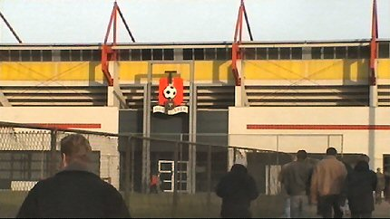
De eerste oefenwedstrijd van de winterstop wordt in Oss gespeeld tegen de
plaatselijke eerstedivisionist Top Oss.
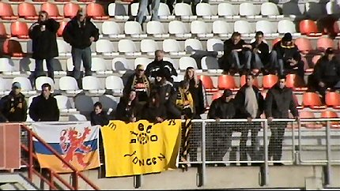
Van de 800 toeschouwers zijn er ongeveer 50 van Roda. De meesten in het
gastenvak (foto) en op de hoofdtribune (overzijde).
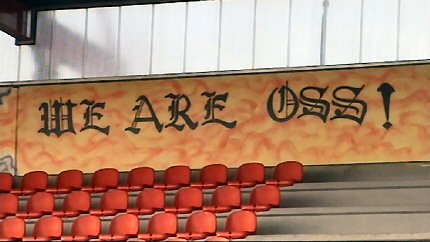
Tussen beide tribunes (er zijn er maar drie) bevindt zich de sfeertribune
waar
de harde kern staat. Tijdens de wedstrijd gingen drie aardige knallers af.
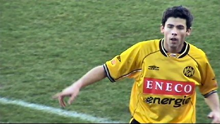
Zowel Roda als Top Oss speelden niet in de sterkste opstelling. Bij Roda
stonden Colinet, Jongen Lachambre en Budziak in de basis. Kone, Filipovic,
Van Dijk, Kujovic en Sergio speelden niet.
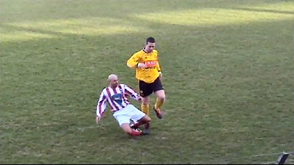
De eerste helft was bijzonder saai zodat we....
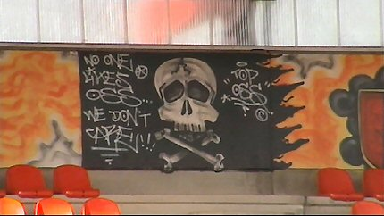
... op ons gemak de fraaie graffiti konden bestuderen.
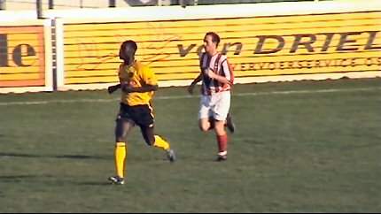
Kah maakte een redelijk goede indruk.
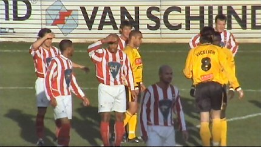
De spelers hadden veel last van de zon.
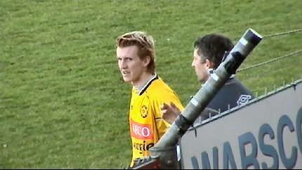
Ken Leemans maakt zijn debuut bij Roda als invaller voor de
geblesseerde
Bodor.
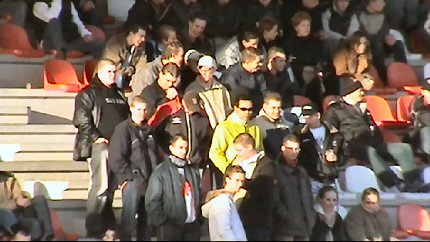
De "Crazy-side".
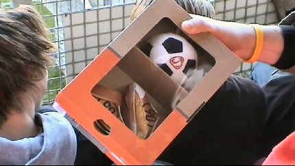
Cox 10 heeft een fraai cadeau voor Kujovic' zoontje meegenomen.
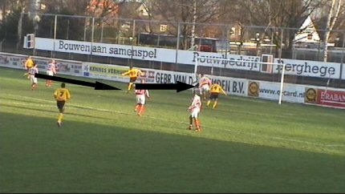
Jongen tikt een bal van Lachambre door en scoort zo 0-1 (48').
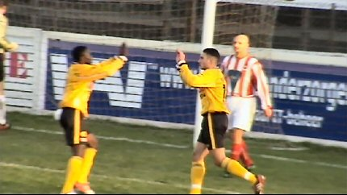
Elberkani scoort even later 0-2, (55').
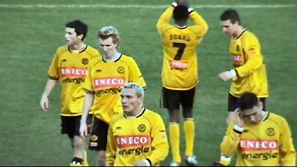
De stand bleef onveranderd.
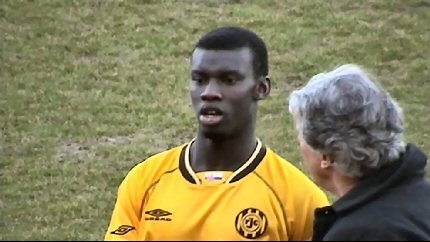
Kah nog eens van dichterbij.
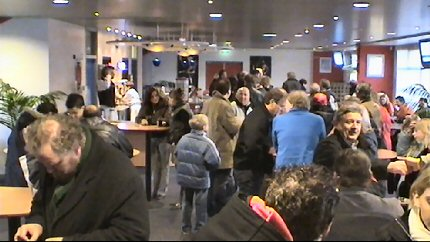
Het bescheiden maar gezellige spelers/sponsor-home.
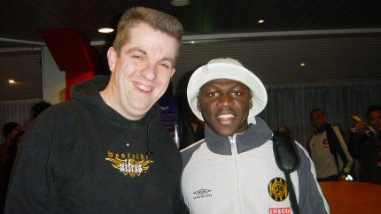
Arouna met zijn protégé.
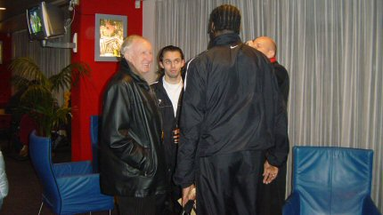
Onthullend: Hendriks probeert Vrede weer terug te praten naar
Roda ;-)
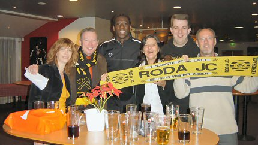
Regillio en enkele PR-mensen van Oss op de foto met de Rodasjaal.